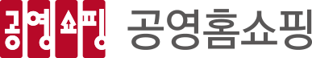
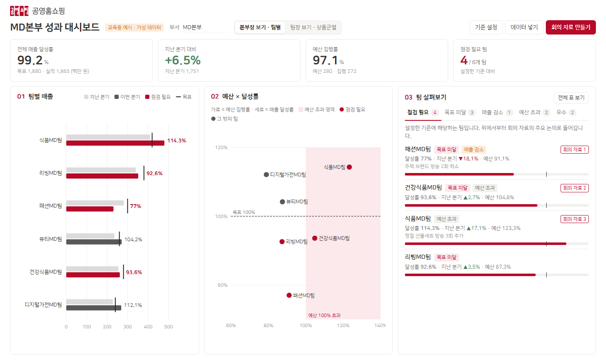

AI 활용 리더십 과정 · 3·4일차 실습
성과 대시보드 시안
01이렇게 움직입니다
실제 화면에서 버튼을 눌렀을 때 바뀌는 모습입니다. 화살표가 가리키는 곳을 보시고, [다음]으로 넘겨 보세요.
1

02화면 구성
화면의 번호를 따라 보시면 됩니다.

1 2 3 4 5 6 7 81
보기 전환본부장은 팀별로, 팀장은 상품군별로 같은 화면을 봅니다. 데이터만 바뀌고 기능은 같습니다.
2
기준 설정달성률·매출 감소·예산 초과 기준과 회의에서 다룰 개수를 직책자가 정합니다. 숫자를 바꾸면 화면 전체가 바로 바뀝니다.
3
데이터 넣기엑셀 표를 붙여넣거나 CSV 파일을 불러옵니다. 계산은 PC 안에서만 이루어져 데이터가 밖으로 나가지 않습니다.
4
회의 자료 만들기점검이 필요한 팀을 골라 사실·물어볼 것·정할 것을 정리하고, 결정과 후속 조치를 적어 PDF·CSV·TXT로 저장합니다.
5
한눈에 보는 숫자전체 달성률, 지난 분기 대비, 예산 집행률, 점검이 필요한 팀 수를 맨 위에 보여 줍니다.
6
팀별 매출지난 분기·이번 분기·목표를 한 줄에 비교합니다. 기준에 해당하는 팀은 빨간 막대로 표시됩니다.
7
예산 × 달성률돈을 얼마나 썼고 성과를 얼마나 냈는지 한 점으로 보여 줍니다. 분홍 영역은 예산을 계획보다 더 쓴 팀입니다.
8
팀 살펴보기점검 필요·목표 미달·매출 감소·예산 초과·우수 탭으로 해당 팀만 모아 봅니다. 점검 필요 탭의 순서가 회의 자료 순서입니다.
03색상 시안
같은 화면을 세 가지 색으로 준비했습니다. 버튼을 눌러 비교해 보세요. 세 시안 모두 빨간색은 '점검이 필요한 곳'에만 씁니다.
AI 활용 리더십 과정 · 성과 대시보드 시안 · 화면의 숫자와 팀 이름은 모두 교육용 가상 데이터입니다.